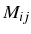
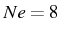
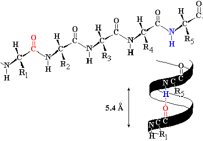
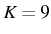
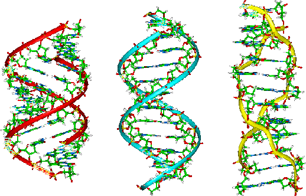
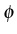

Para neutralizar las cargas polares del esqueleto peptídico, las proteínas adoptan conformaciones que maximizan la formación de puentes de hidrógeno, gracias a la libertad de giro de los enlaces situados inmediatamente antes y después del enlace peptídico. Esto lo hacen principalmente formando -hélices dextrógiras, láminas , como se muestra en las figuras 1.11, 1.12, 1.13 y 1.14, y giros de varios tipos, en menor medida.
|

|

|
|  |

|
La estructura secundaria de las proteínas se puede codificar de manera similar a la secuencia primaria, asignando a cada residuo una letra que identifica el estado de estructura secundaria en que se encuentra. Se suele identificar a los residuos de una -hélice con H, los de una lámina con E y los demás con C, del inglés coil . Cuando la estructura secundaria es de especial interés se pueden hacer subclases del estado C, como T (del inglés turn ) o B (de horquilla , hairpin ).
La misma secuencia que vimos antes podría tener esta estructura secundaria:
MFSQHNGAAV HGLRLQSLLI AAMLTAAMAM...
EEEECCEEEE HHHHHHHHHH CCCCCCCCCC...
La estructura secundaria de los ácidos nucleicos está también basada en la formación de puentes de hidrógeno, dada la naturaleza polar de los nucleótidos. Para el caso del ADN, como se muestra en la figura 1.15, el repertorio de puentes de hidrógeno posibles es muy limitado: adenina (A) con timina (T) y guanina (G) con citosina (C).
|  |
Estos emparejamientos son la base de la estructura secundaria de los ácidos nucleicos, que suelen ser patrones repetidos helicoidales. En el caso del ADN se suelen formar entre dos polinucleótidos de secuencia complementaria, mientras que en el ARN son estructuras ( stems , loops ,...) que se forman dentro del mismo polinucleótido.
|  |